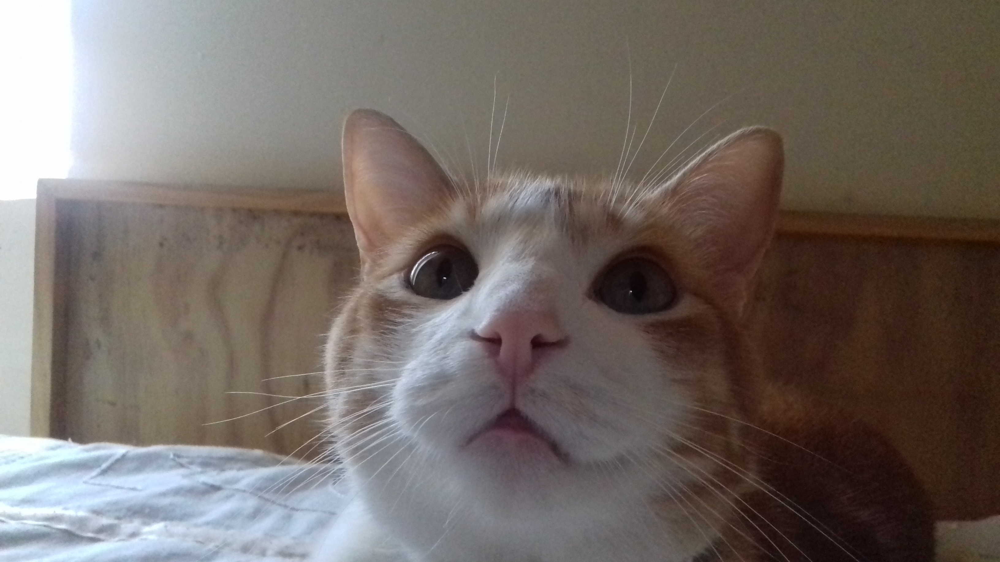
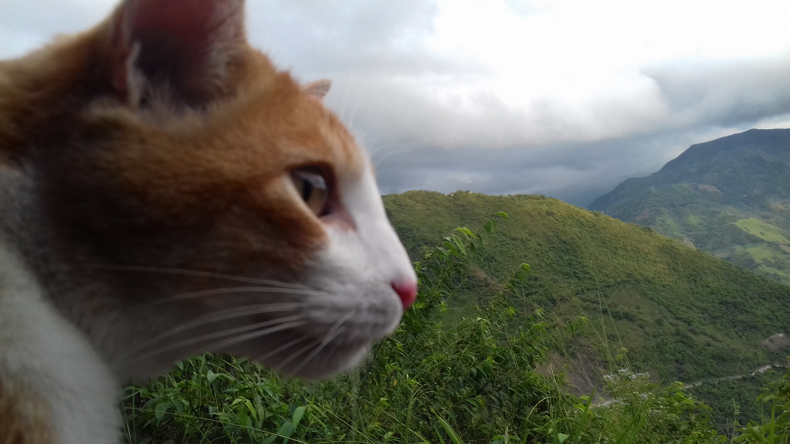

Nací en un país hermoso rico en fruta, agricultura, fauna, mucha naturaleza, hermosos paisajes, hermosas mujeres, muchos pueblos, montañas, entre otras cosas. Vengo del sur, de una familia humilde, y hasta el día de hoy no me ha faltado nada, con la bendición de Dios me ha dado el pan de cada día, estudio, trabajo, tengo todos los servicios de la casa: agua, luz, teléfono, etc. Mis padres me educaron con mucha humildad y respeto, y me han convertido en el hombre que soy, pero no solamente fueron ellos, también mis compañeros de colegio, mis amigos de la niñez, todas las personas que fueron parte de mi vida en el pasado.
Esta es la historia de mi vida, en realidad no me acuerdo mucho de mi niñez sólo unas cuantas cosas. En tercer grado de primaria, me hicieron bullying, perdí dos veces el grado tercero, me cambiaron de colegio y logré pasar el curso, después para el grado de cuarto y quinto lo hice en colegios diferentes. Entrar a bachillerato fue una nueva etapa de mi vida, volví al mismo colegio donde perdí tercero las dos veces, ahí estudié hasta octavo grado, ya en octavo grado perdí el año, ya para el siguiente curso no iba a volver a un colegio, sino a un instituto a validar el colegio.
En dos años cursé octavo, noveno, decime y once, mientras validé varios cursos, a la vez hice un curso por un año y medio en diseño y emprendimiento Ya en grado once hice la prueba saber icfes, y la prueba para entrar a la Universidad Nacional de Colombia, en las dos tuve un muy bajo puntaje. Y me gradué en el 2016, al finalizar el curso, entré a la universidad a estudiar comunicación gráfica, ya llevo un buen tiempo en la carrera y pienso que estar aquí fue una señal de Dios o algo así por el estilo, lo digo porque toda mi vida había sido una persona dormida, demasiado dormida, estando en los dos primeros años en la universidad, estuve en terapia psicológica, y toda mi vida estuve en terapia con el psicólogo, pero mi psicóloga de la universidad me ayudó a despertar en el maldito sueño en el que estaba, además de tomar clases de natación, estar martes y jueves en el agua, eso me ayudó también a despertar, me recuperé y no volví a ir a terapia, estando en terapia me sudaban las manos, era muy ansioso y nervioso, ya no, ahora soy otro yo, he mejorado mi rendimiento académico, ya tengo mi proyecto de vida armado, sé lo que quiero, y sé a dónde quiero llegar.
Tengo muchos sueños y metas, pero no los voy a contar aquí, pienso que los sueños y las metas son muy personales para cada persona, pero tengo un proyecto que no sé cómo empezar o aplicarlo y esto no es algo de una sola persona sino de miles de personas, todos los países del mundo, cada rincón de este mundo y es así:
El proyecto es sobre el cuidado del medio ambiente. Todos saben que el mundo se está enfermando y es por culpa de toda la humanidad, no sabemos cuidar de nuestro planeta sino más bien lo estamos consumiendo hasta agotarlo, pero si hiciéramos un cambio, las cosas serían diferentes, hay un grave problema y es que como humanos trabajamos por aparte, no somos un equipo.
Lo que pienso es crear un grupo de ambientalistas grande, con muchas personas, que defiendan la naturaleza y a los animales, un grupo con un nombre y un escudo que los identifique, el color verde con café y azul, la combinación de los colores del planeta tierra, ese mismo grupo que haga charlas a todas las personas del mundo de como tener un buen cuidado. También hacer limpieza de toda la basura regada en los ríos, mares y bosques.
Hacer nuevas leyes y la persona que bote basura en las calles, en los bosques o en cualquier parte del mundo recibirá una buena estadía por un buen tiempo en la cárcel, o si no quiere la cárcel, hacer servicio comunitario por un año. Poner más cámaras y fuerzas militares en todo lado, no sólo por cuidado del medio ambiente sino también por el cuidado de las personas.
Plantar muchos árboles, flores que las ciudades ya no parezcan ciudades sino bosques, así como puede haber millones de carros en una carretera, por qué no un millón de árboles también. Si los árboles nos dieran dinero o wi-fi, de seguro las personas si plantarían más árboles, pero lástima que sólo nos dan el oxígeno que respiramos por eso los talan. Tengo entendido que para abastecer el oxígeno de una sola persona al Día, es necesaria la cantidad de 22 árboles. A medida que se talan y arrasan con los bosques, disminuimos nuestras propias posibilidades de vivir.
Estos son algunos libros de mis escritores favoritos, me gustan mucho, en cada uno de ellos voy a dar una breve explicación que me genera ese libro, si no te gusta leer, espero que con satatanás empiece a gustarte el mundo de los libros.
Con este libro me empezó a gustar la literatura, empecé a leer mucho, me gustan mucho los libros de Mario Mendoza, cuando e leí Satanás, yo tenía tan solo 16 años, me pareció fuerte cuando lo había leído.

Duis mollis, est non commodo luctus, nisi erat porttitor ligula, eget lacinia odio sem nec elit. Cras mattis consectetur purus sit amet fermentum. Fusce dapibus, tellus ac cursus commodo, tortor mauris condimentum nibh.

Donec sed odio dui. Cras justo odio, dapibus ac facilisis in, egestas eget quam. Vestibulum id ligula porta felis euismod semper. Fusce dapibus, tellus ac cursus commodo, tortor mauris condimentum nibh, ut fermentum massa justo sit amet risus.
Yo no sabía nada del museo Louvre sino fuera por el libro o la película de el código Da Vinci, al leer el libro o ver la película la trama me atrapó, los lugares recorridos, es increíble lo bien que está escrito el libro y todos los libros del autor.
Maze Runner es otra aventura que me gustaría vivir, por unos días, ser un corredor de laberinto, estar en el área con amigos, disfrutar de la naturaleza, sobrevivir de los penitentes, no ser un novato (una de las últimas personas en entrar al área).
Es un libro de reflexión, un libro juvenil, esta historia me impactó mucho, una historia de aprender a soltar, y la verdad es que me vi reflejado en por qué me apego a las personas y fue difícil despegarme de algunas personas y del libro aprendí que es bueno también despegarse de algunas personas.
Esta playlist está compuesta por mis artistas favoritos y mi canción favorita número uno del artista, me gustan escucharlas la mayoría del tiempo, más que todo cuando hago ejercicio y el número de canciones es de 85.
Me gusta mucho la música en inglés, más que en español, mis géneros favoritos son el rock, reggae, electrónica, entre otras. Pero la que menos me gustan son el reggaetón y el vallenato pero hay una que otra canción que me gustan de este género, pero de vez en cuando escucho una canción de estos géneros. y finalmente canciones aleaotrías de diferentes géneros, reggaeton, rock, metal, electrónica, pop fussión, etc.
| Géneros | Artistas |
| Covers | Frog Leap Studios |
| Rock en español |
|
| Rock en inglés y hard rock |
|
| Rock alternativo en inglés |
|
| Metal y Nu Metal |
|
| Reggae y Reggae en español |
|
| Electrónica |
|
| En español |
|
| Pop-Pop rock-Pop fussion |
|
| Diferentes tipos de género |
|
En esta parte quiero mostrar a mis personajes favoritos, algunos de ellos son comediantes, luego cantantes, escritores, y finalmente ilustradores. También explicaré porque me llaman la atención estos personajes y que me motiva Nombrar algunas de sus obras, de dónde son, poner datos personales de cada uno es como un top seis de artistas favoritos.
Me gustan mucho sus películas, tiene buen sentido de humor, aunque a veces es muy infantil y aburre, él es de Estados unidos, y para mpi es uno de los mejores actores de comedia.
No hay nadie como él en el cine de la comedia, también es cantante, escritor y pintor, él me motiva mucho hacer reir a las personas, y eso me alegra mucho, me encanta mucho la comedia. Jim es de Canadá.
Me encanta su música, sus canciones revolucionarias y rebeldes, me gusta el estio de Billie Joe, es un personaje principal en mi vida. Sus canciones me hacen feliz. Billie es de Estados Unidos.

A veces es genial escuchar una melodia suave, y Abel Makkonen Tesfaye (así es el nombre del artista de "The Weeknd" de Canadá) tiene una voz de ángel, es un ritmo suave e increíble que me parece difícil de describir.
Un escritor colombiano, me encantan sus libros, habla sobre un mundo oscuro, cosas que nadie cuentan, con un libro de él me empezó a gustar leer.

Dan Brown un escritor de Estados Unidos, con un increíble talento para escribir libros, no lo comparo con nadie, al leer sus libros lo atrapa a uno, no se puede parar de leer el libro.
Diego Sánchez,de la Universidad Nacional de Colombia, es ilustrador, autor, músico y diseñador gráfico. participé en uno de sus talleres de ilustración, y me empezó a gustar la ilustración gracias a él. Ahora pienso terminar la carrera y hacer un posgrado en ilustración
"Roba como artista" un libro que me inspiró a hacer muchas cosas, soñar como grande y no olvidar el niño que llevo dentro, un buen libro que me ayudó a proyectar mi vida, a seguir soñando y logrando mis metas. Austin es de Estados Unidos.